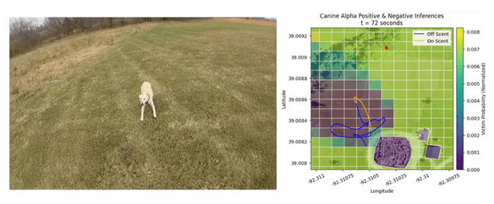

A blur of golden fur and exuberance, the search and rescue dog bolts from a handler’s side and carves a wide arc through a patchy field in Missouri.
The dog, who is part of an elite urban search-and-rescue team, knows what her duty is: Find a scent trail, locate the person at the other end of the odor, and alert her handler—guiding them to someone who might be lost, trapped, injured, or dead.
But this isn’t just any training session: It’s a test of new technology—a new relationship, really, between artificial intelligence, animals, nuts-and-bolts technology, and humans. In this test, AI-enabled tools are being put through their paces to see if they can enable search-dog teams to help rescuers find people faster after a catastrophic event, such as an earthquake or tornado.
High above the scene hovers a drone, gathering information about the dog’s movements. Combining this data with stats on the location, including its topography and weather conditions, AI-powered software can make predictions of where someone in need of rescue is most likely to be. This information in hand, the human handler in a real rescue could then send drones equipped with cameras and infrared sensors out ahead of the dog—faster and more efficiently than either mammal could go—to pinpoint the victim.
Some of the magic is in the human-dog rapport.
On a tablet displaying an overview of the trial, the area is divided into a grid, which turns into a high-tech game of “hot-or-cold.” Each square within is shaded to represent the probability that the person they’re searching for is in that area. Purple-blue is cold, green is getting warmer, yellow is hot. A blue line traces the dog’s trajectory across the area. The pup cuts west, then loops back around to the handler. Soon, after the canine sets off again in a more pointed direction, the line representing her path becomes yellow: The program has inferred from the dog’s behavior that they’ve caught the scent. Squares of the grid start shifting hue in response to the dog’s movements, adjusting and refining the predictions of where the hiding human might be. The ones near the victim shift toward yellow as the dog gets closer.
The pup is helping to develop the Collaborative Intelligence for Olfactory Search Missions Integrating Canines and Technology (COSMIC-T). Created by an AI company called Scientific Systems, the technology aims to combine biological dog-data with digital info, using humans as a bridge between the two—a collaboration that could help save lost hikers, victims of natural disasters, or soldiers in war by locating humans in peril faster than animal, human, or drone could.
The work sits partly within a field of study sometimes called “animal activity recognition,” which uses instruments such as motion sensors, now often coupled with AI, to classify what an animal is doing. It also incorporates “latent state inference,” which in this case works to interpret more indirect or hidden canine cues. The human team has applied the combo to search and rescue operations—to understand and respond to a dog’s signals that they’ve caught a scent, and are on the trail of a “gotcha.” The same technology could also be useful for tracking down fugitives or suspected criminals, since a human scent is a human scent.
Although researchers have studied the ways that the combination of AI and animal behavior might aid search and rescue, a 2023 review paper found that fusing data from different sensors to understand what animals were up to, in general, “is still in its early stages and has yet to be fully explored.” As Humberto Pérez-Espinosa of the National Institute of Astrophysics, Optics, and Electronics in Mexico, and an author of that review, says, “Compared to advancements in interpreting human behavior using AI and sensor data, the study of canine behavior is still in its infancy.”
For decades, dogs and their superior sense of smell—combined with their athletic prowess and endearing desire to please—have been essential to search and rescue teams. As early as World War I, the Red Cross trained dogs to find wounded soldiers, calling them “mercy dogs.” There were, of course, no digital algorithms or drones back then, and the analog seek-and-finds were not as efficient as they have become nearly a century later.
People involved in search-and-rescue or medicine typically refer to the initial period after a person experiences a traumatic injury as the “golden hour”: the short window in which life-saving care tends to be most effective. People needing search or rescue who may not be gravely injured are still at critical risk because every minute that ticks by prolongs the time they might be subject to the elements and surviving without food or water. In December, for example, two men died of exposure in a Washington State forest and were found only after a three-day search involving human, dog, and drone search capabilities.
Humans still haven’t found a way to replicate a canine’s role in the search process. “We’ve spent hundreds of millions of dollars trying to make a sensor that is as good as a dog’s nose, and we’ve never gotten close,” says Mitchell Colby, the group lead for AI and machine learning at Scientific Systems. Beyond that, some of the magic is in the human-dog rapport. “AI is making great strides, but I have not seen any AI that can compete with the intuition of an operator with a lot of experience.”

TECH ON THE TRAIL:A heat map powered by AI analysis and drone imagery helps search-and-rescue teams of dogs and their handlers pinpoint the most likely location of a human in need faster. Credit: Scientific Systems.
Nevertheless, the handler-dog pairing can be somewhat inefficient. Each dog has one specific human partner, who has often raised them since they were a puppy, spending 800 to 1,000 hours of training to get them certified—plus countless hours after that practicing and actually saving people.
One key outcome of all that time together is a close, instinctive connection, in which a handler knows that, say, their dog lowers their body slightly when they’ve sniffed the smell they’ve been searching for. Success is in the dyad, says Jeff Hiebert, president of the organization Search and Rescue Dogs of the United States. “They rely just as much upon the handlers as the handler does on the dog.” Still, our eyes can’t parse all their movements and bodily cues to make as much sense of the shifts as AI-powered observation of the dogs can.
And the intense dog-handler relationship makes scaling up canine search difficult. Scouring an earthquake-leveled block of apartment buildings for survivors is slow going if you need one particular human paired with one particular dog. “It gets really scary when we start to think about these large-scale disasters,” says Colby.
That one-person-one-dog limitation was the inspiration for the exercise taking place in the Missouri field.
Colby had worked on algorithms that direct drones—and even future space robots—to work collaboratively. But what if an algorithm could improve collaboration across the biology-technology divide—and even a species one? So he came to the idea of incorporating humans, animals, and drones, augmented by AI, that could be useful in saving soldiers or civilians during catastrophes. He pitched it to the Defense Advanced Research Projects Agency (DARPA), a research arm of the U.S. Department of Defense. DARPA was interested. According to Matthew Marge, a DARPA program manager, it continues the tradition of the agency’s Information Innovation Office to investigate human-machine melding—a goal first laid out in the 1960s by former DARPA director J.C.R. Linklider. “How can humans and machines find symbiosis and achieve more together than they can separately?” asks Marge. “This type of project gets at that essence.”
After years of development, Colby and the Scientific Systems team built drone software that can perform “canine latent state inference”: basically, watching a canine scour the Earth, and inferring whether it is actively following Timmy’s scent to the well, or still seeking that trail. Then, also borrowing from the field of movement ecology, they outfitted dogs with GPS-enabled vests, to precisely watch their motion. “If an animal is trying to find something based primarily on its nose, how does it move through the environment to optimally use that sensor?” Colby asks.
The dogs are also kitted out with a microphone and speaker, allowing the humans to hear the dog’s barks or other audible alerts, and for handlers to give commands back.
Humans still haven’t found a way to replicate a canine’s role in the search process.
The initial stages of the project tracked a canine member of the Missouri Task Force One as they jogged, snuffled, sprinted, and barked, beginning in 2018. The search team kept specifics—like the dog’s name, and other potentially biasing details—from the AI team so they wouldn’t have insider information that might affect their analysis. Colby and team used AI-driven software to ingest and interpret that behavior, so it could learn to predict whether an animal is searching for a scent or actively on the trail. In the early test, the dog-human-drone-software team found a simulated victim six times faster than the search team would have without the AI.
Missouri Task Force One helped the team gather data for four years. From 2022 to 2024, they furthered this theory of dog-mind: To make sure the early dog behavior that trained the AI was more broadly applicable, the researchers tested it with dogs whose movements hadn’t been part of the early training data. Once the AI-enabled software determined that the dog caught a smell, it combined that with environmental data, such as weather and wind models—inferring, for instance, that if there’s a north-south breeze, and a dog is on the scent, the victim probably lies north of the dog. Autonomous drones can then make their own way in that direction, homing in on the person faster than if the dog had to lead a trotting human to them, or if the drones were searching without canine-computer guidance. Overall, depending on the specific environment of the test, the mock victims were located five to 10 times faster than they would have been without the synthetic help.
Unlike traditional search and rescue—which relies on the one-to-one pairs—this approach can provide understanding of the behavior of numerous dogs, their varied behaviors, and their overall environment all at once. And with multiple animals’ inputs, rescuers can seek many victims at once. “If you have multiple canines moving through the environment, and some are hitting and some aren’t, you can combine all that data and get much tighter areas where you think victims might be,” says Colby.
Combine that ability with a swarm of small drones, all of which can communicate with each other, as Colby and his fellow engineers hope to do, and rescuers stand an even better chance of finding someone in those crucial early times.
Beyond help for humans at risk, says Pérez-Espinosa, smart sensor systems can also make sure the dogs themselves are doing okay during a search. “These missions are physically and emotionally demanding, and it is needed to monitor a dog’s physiological and behavioral state in real time,” he says.
In the test in the Missouri field, watching the screen as the yellow dog and its yellow line converge with the red dot, it’s easier to see this future materializing. As the dog approaches the northern end of the map and slows down, the square they’re in suddenly turns yellow, too. The highly trained animal is right on top of her target: contact!
Of course the dog found the hidden person: That’s what search dogs do. But the watchful drone, in its way, understood where the dog was heading before the dog did, and passed that information on to help help arrive sooner. 
Lead photo by Noska Photo / Shutterstock